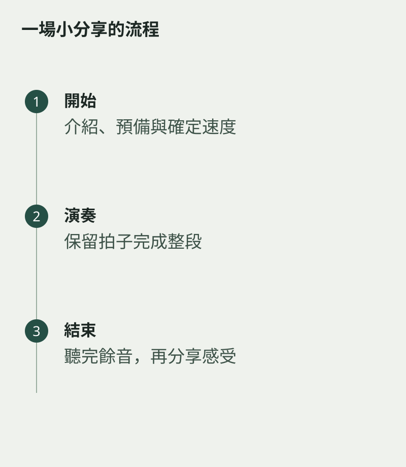

表演不一定要等大舞台。邀請一兩位家人聽一首短曲，可以練習走到位置、預備、演奏和收尾。曲目宜選已經較穩定的版本，讓注意力放在完成流程，而不是同時挑戰所有技巧。
先說清楚這是一段分享時間，請聽者在結束後才回應。演奏者也可以簡單介紹曲名與自己喜歡的地方，不需要一篇正式講稿。
一次完成與細修分開
演奏中若有小錯，試着保留拍子繼續，先走完整段。演奏中若有小錯，試着保留拍子繼續，先走完整段。這是練習另一種能力：不在出錯時停下來修改。完成後，再選一個地方回去細修。
開始前可在心裏聽第一句，確定速度；結束後讓末音走完，才放下樂器。這些細節越熟悉，上台時越少需要臨時想。

回應以觀察為主
聽者可以說一個記得的片段，或問演奏者哪裏最滿意。避免剛結束就逐項評分，尤其對初次分享的小朋友，先讓完成整首曲的經驗有位置。
若有錄音，隔一會兒再聽，選一件下次想改善的事。客廳的舞台很小，學到的卻是真正演出需要的工作：準備好，把音樂說完，再安靜地回到日常。